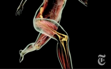

Укрепление коленных суставов
Один из ключей к долголетию в капоэйре — крепкие, здоровые колени. Слишком часто ненадлежащая форма и отсутствие мышечной поддержки постепенно ухудшают здоровье ваших суставов, пока в один прекрасный день вы не обнаружит, что все в фастум-геле, эластичном бинте и неопрене. Джин Шефер и Джейсон Д'Амелиу, который тренируется с профессором Тиба из капоэйры Луанда, выложили в сеть видео, демонстрирующее 4 простых упражнения, которые вы можете сделать в любом месте, и которые укрепят мышцы вокруг колена, придавая ему большую стабильность. Вот эти упражнения с парой моментов, которые рекомендуется держать в уме при выполнении:
Упражнение 1 — приседания — ноги на ширине плеч, приседайте, отводя бедра назад и следя за тем, чтобы ваши колени не шли вперед относительно пальцев ног. Выполните 3 подхода по 15 повторов.
Упражнение 2 — выпады на месте — тянитесь всем телом вниз, следя за тем, чтобы впереди стоящее колено находилось непосредственно над лодыжкой. Выполните 3 подхода по 15 повторов на каждой ноге.
Упражнение 3 — балансирование на одной ноге с диагональными наклонами — в полуприсяде на одной ноге, сделайте мах назад свободной ногой, выпрямив спину, и стараясь дотянуться до опорной ноги противоположной рукой. Выполните 3 подхода по 15 повторов на каждую ногу.
Упражнение 4 — подшаг с подъемом колена — сделайте шаг на любое возвышение (коробку, стул и т.п.) и подтяните противоположное колено. Убедитесь, что вы полностью контролируете подъем. Выполните 3 подхода по 15 повторов на каждую ногу.
по материалам roda magazine